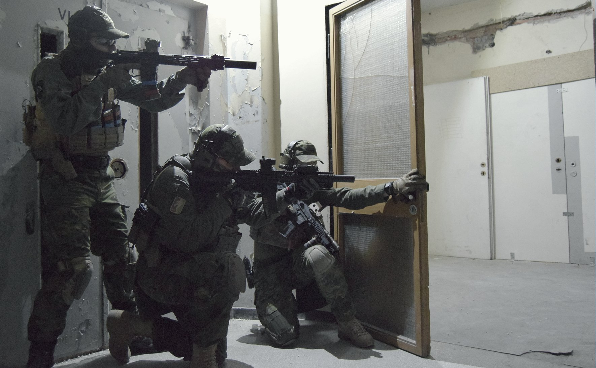

7
S-pecjalna
G-rupa
O-peracji
T-aktycznych
7 SGOT, to Specjalna Grupa Operacji Taktycznych, która kładzie duży nacisk na treningi i doskonalenie swoich
umiejętności w dziedzinie czarnej i zielonej taktyki oraz strategii na polu walki ASG. Jesteśmy ekipą dobrych
znajomych,
którzy razem podzielają pasję do airsoftu. Wyznacznikiem skuteczności nie jest dla Nas ujednolicenie wyposażenia
i
umundurowania, a indywidualne zdolności każdego członka i umiejętność wykorzystania ich podczas rozgrywek. W
Naszej
drużynie panuje delikatna unifikacja sprzętu pod względem używanego kamuflażu, mimo to pozostawiamy dużą
możliwość
indywidualizacji wyposażenia. Działamy głównie na terenie województwa Kujawsko-Pomorskiego oraz Pomorskiego, w
miastach
Toruń (sekcja Alpha) i Gdańsk (sekcja Bravo) jednak bierzemy udział w wydarzeniach na terenie całego kraju.
